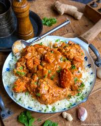

Maffé
Home

Maffé (also called Maafe or groundnut stew) is a rich and flavorful West African dish made with a savory peanut butter sauce, tender pieces of meat (usually beef,
lamb, or chicken), and vegetables like carrots, potatoes, and sometimes cabbage or eggplant.
It is
traditionally slow-cooked to allow the deep, nutty flavors to develop. The peanut sauce is thick, creamy, slightly spicy, and perfectly balances savory and sweet notes.
Maffé is usually served with white rice, couscous, or fufu, making it a hearty and satisfying meal.
- 500g beef (or chicken/lamb), cut into chunks
- 3 tablespoons peanut butter (natural or creamy)
- 2 tablespoons tomato paste
- 2 large tomatoes, diced
- 2 carrots, sliced
- 2 potatoes, diced
- Heat the oil in a large pot over medium heat. Add the beef and brown on all sides. Remove and set aside.
- In the same pot, sauté the onion, garlic, and chili pepper until softened.
- Add the tomato paste and diced tomatoes, cook for 2–3 minutes while stirring.
- Stir in the peanut butter, mixing well with the tomato mixture.
- Return the beef to the pot. Add water or broth to cover the meat. Add the bay leaf, salt, and pepper.